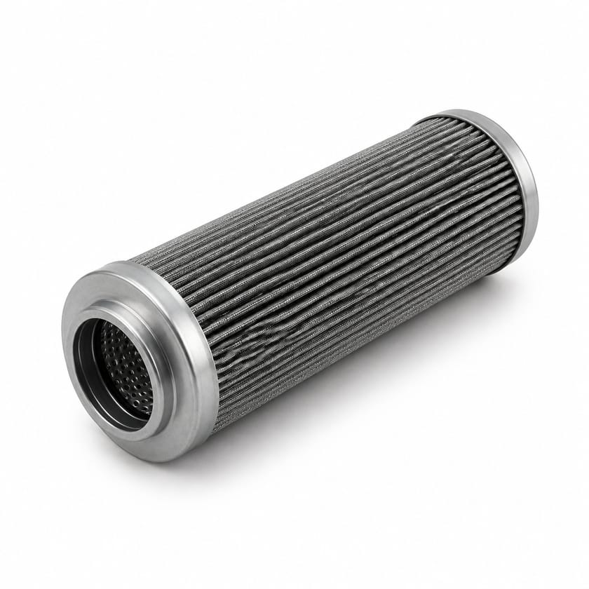
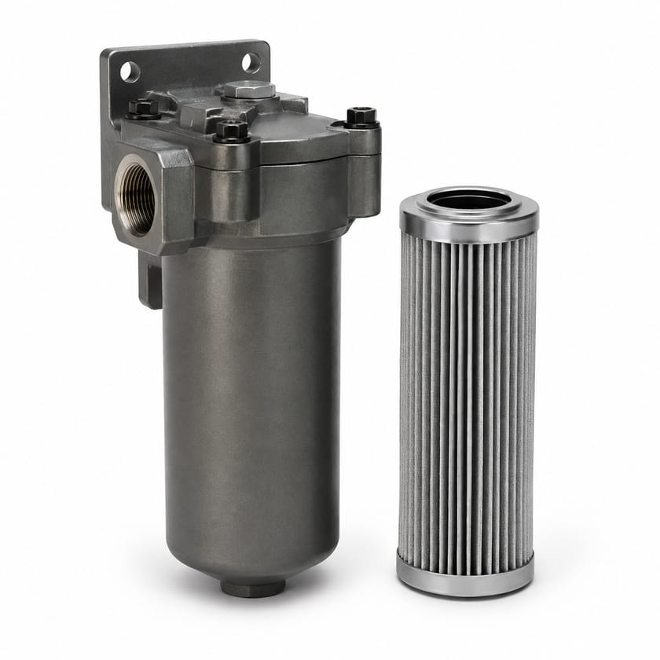
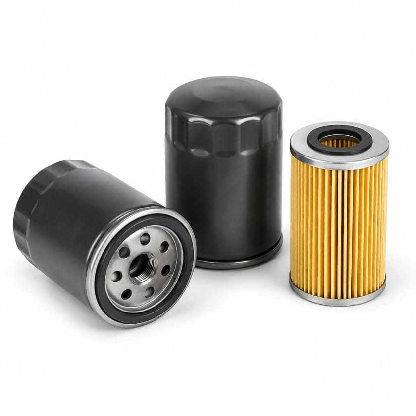
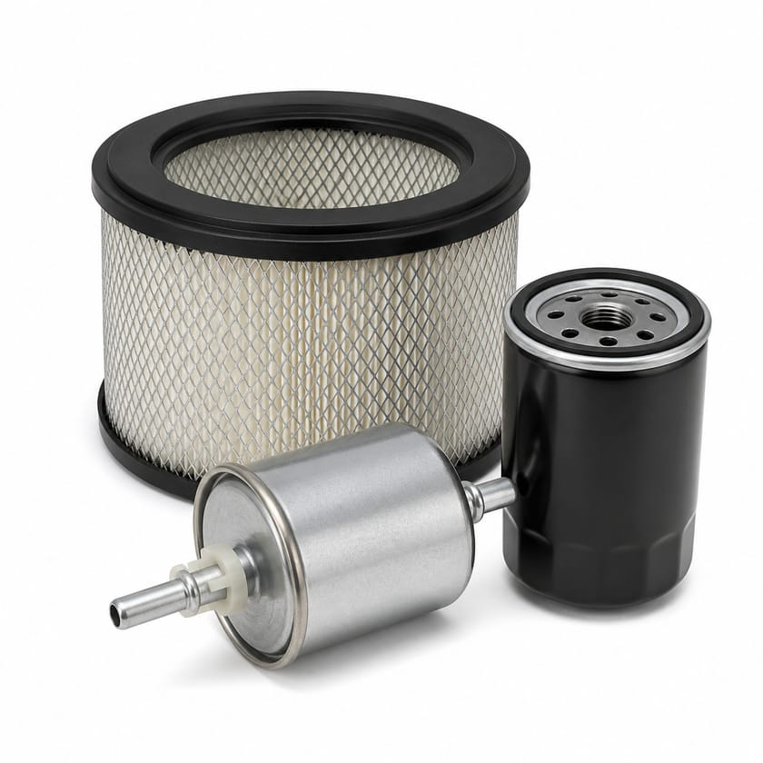
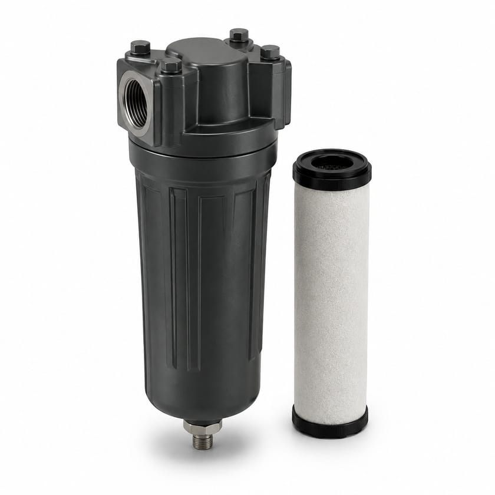
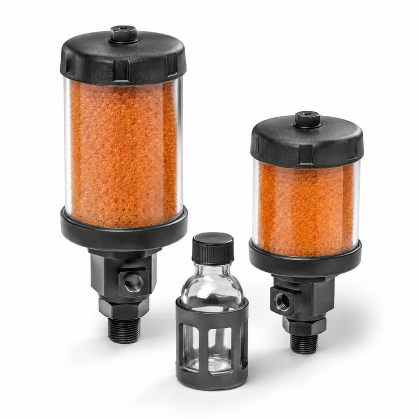
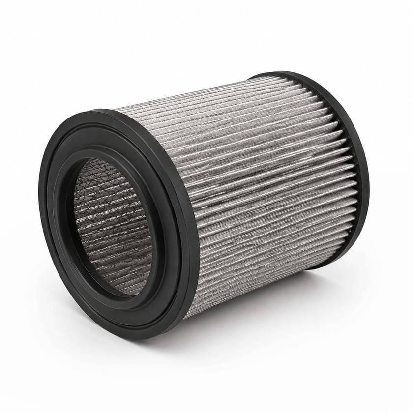
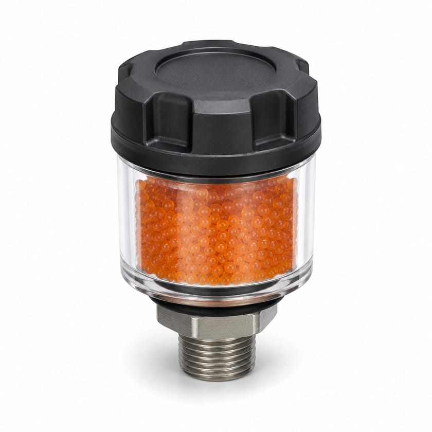

Filtration hydraulique & corps de filtre
Hydraulic Filter
Filtre retenant les particules qui usent pompes, distributeurs et vérins.
À préciser Finesse en micromètres, débit, pression, référence d’origine ou dimensions
Demander un prixFiltration & Contrôle de Contamination
Filtres hydrauliques, à huile, à air et à carburant, corps de filtres et accessoires de maîtrise de la contamination.

Parcourir

Filtres retour, pression et aspiration, réservoirs, corps et séparateurs.
17 références
Filtres et cartouches pour circuits de graissage et d’huile.
4 références
Filtres à huile, à air, à carburant, d’habitacle et de transmission.
6 références
Filtration d’air comprimé, dépoussiérage, charbon actif et coalescence.
7 références
Reniflards dessiccants, groupes de transfert et analyse de propreté.
7 référencesSélection
Trois articles parmi les plus demandés de la famille. Le catalogue complet se trouve juste en dessous.

Filtration hydraulique & corps de filtre
Filtre retenant les particules qui usent pompes, distributeurs et vérins.
À préciser Finesse en micromètres, débit, pression, référence d’origine ou dimensions
Demander un prix
Filtres moteur & flotte
Filtre à air moteur protégeant l’admission de la poussière ambiante.
À préciser Marque et modèle de l’engin, référence d’origine ou dimensions
Demander un prix
Reniflards & maîtrise de la contamination
Reniflard dessiccant retenant l’humidité et la poussière à l’entrée d’air du réservoir.
À préciser Débit d’air, capacité d’absorption, filetage et indicateur de saturation
Demander un prixCatalogue
Les 41 références types de cette famille. Filtrez, cherchez, puis demandez un prix pour n’importe laquelle.
Aucune référence ne correspond à votre recherche. Décrivez-nous l’article directement : nous l’identifions.
Filtre retenant les particules qui usent pompes, distributeurs et vérins.
À préciser Finesse en micromètres, débit, pression, référence d’origine ou dimensions
Filtration hydraulique & réservoirs
Filtre de retour traitant tout le débit avant son retour au réservoir.
À préciser Débit, finesse, pression de service, montage sur cuve ou en ligne
Filtration hydraulique & réservoirs
Filtre haute pression protégeant les organes sensibles en aval de la pompe.
À préciser Pression de service, débit, finesse et indicateur de colmatage
Filtration hydraulique & réservoirs
Crépine d’aspiration protégeant la pompe des gros contaminants.
À préciser Débit, finesse, raccord et présence d’un clapet de contournement
Filtration hydraulique & réservoirs
Réservoir hydraulique assurant stockage, décantation et refroidissement du fluide.
À préciser Volume utile, matière, piquages, accessoires et implantation
Filtration hydraulique & réservoirs
Bouchon reniflard filtrant l’air entrant lors des variations de niveau.
À préciser Débit d’air, finesse, filetage ou diamètre de montage
Filtration hydraulique & réservoirs
Indicateur de niveau d’huile, souvent combiné à la température.
À préciser Entraxe de fixation, matière, plage de température et contacts éventuels
Filtration hydraulique & réservoirs
Accumulateur à vessie amortissant les pulsations et stockant de l’énergie.
À préciser Volume, pression de service et de pré-charge, fluide et raccord
Filtration hydraulique & réservoirs
Accumulateur à piston pour grands volumes et rapports de pression élevés.
À préciser Volume, pression maxi, rapport de compression et raccord
Filtration hydraulique & réservoirs
Filtre protégeant le circuit de graissage des impuretés et des résidus.
À préciser Finesse, débit, pression et référence d’origine
Filtres de lubrification
Filtre à huile en cartouche ou à visser, selon le circuit desservi.
À préciser Référence d’origine ou dimensions, filetage, finesse et clapet
Filtres de lubrification
Filtre placé sur une ligne de graisse pour protéger doseurs et injecteurs.
À préciser Finesse, pression de service, débit et raccordement
Filtres de lubrification
Filtre d’évent limitant l’entrée d’humidité et de poussière dans un carter.
À préciser Débit d’air, finesse, filetage et tenue à l’environnement
Filtres de lubrification
Filtre à huile moteur, élément d’entretien périodique du véhicule ou de l’engin.
À préciser Marque, modèle et motorisation, référence d’origine ou dimensions
Filtres moteur & flotte
Filtre à air moteur protégeant l’admission de la poussière ambiante.
À préciser Marque et modèle de l’engin, référence d’origine ou dimensions
Filtres moteur & flotte
Filtre à carburant, avec ou sans séparateur d’eau intégré.
À préciser Référence d’origine, finesse, débit et présence d’un séparateur
Filtres moteur & flotte
Filtre d’habitacle assainissant l’air de la cabine de conduite.
À préciser Marque et modèle, dimensions et type (particules ou charbon actif)
Filtres moteur & flotte
Filtre hydraulique de flotte, monté sur circuits d’engins mobiles.
À préciser Marque et modèle de l’engin, référence d’origine et finesse
Filtres moteur & flotte
Filtre de boîte ou de transmission, remplacé lors des vidanges programmées.
À préciser Marque et modèle, type de transmission et référence d’origine
Filtres moteur & flotte
Filtre à air plat en panneau, monté en boîtier d’admission ou de ventilation.
À préciser Dimensions, classe de filtration, débit et cadre
Filtration de l’air & des gaz
Cartouche filtrante cylindrique à grande surface de média.
À préciser Dimensions, classe de filtration, débit et type d’étanchéité
Filtration de l’air & des gaz
Élément filtrant d’air comprimé retenant particules, huile et aérosols.
À préciser Référence de corps de filtre, grade de filtration, débit et pression
Filtration de l’air & des gaz
Cartouche de dépoussiéreur retenant les poussières de procédé.
À préciser Dimensions, média, traitement de surface et référence d’origine
Filtration de l’air & des gaz
Pré-filtre d’admission écartant la poussière grossière avant le filtre principal.
À préciser Débit d’air, diamètre d’admission et mode de fixation
Filtration de l’air & des gaz
Filtre à très haute efficacité pour air de cabine ou de local propre.
À préciser Classe d’efficacité, dimensions, débit et perte de charge
Filtration de l’air & des gaz
Filtre coalesceur séparant les aérosols d’huile et d’eau de l’air comprimé.
À préciser Débit, grade de filtration, teneur résiduelle en huile et pression
Filtration de l’air & des gaz
Corps de filtre recevant l’élément et raccordé au circuit.
À préciser Débit, pression, taille d’élément, raccords et matière
Corps de filtres & séparateurs
Corps de filtre double permettant le changement d’élément sans arrêt.
À préciser Débit, pression, type de vanne de basculement et raccords
Corps de filtres & séparateurs
Tête de filtre portant le raccordement et le clapet de contournement.
À préciser Filetage d’élément, raccords, pression et tarage du clapet
Corps de filtres & séparateurs
Élément séparant l’eau du carburant ou de l’huile avant le circuit.
À préciser Référence d’origine, débit, finesse et efficacité de séparation
Corps de filtres & séparateurs
Séparateur traitant les condensats huileux avant rejet.
À préciser Débit de condensat, type de compresseur, teneur résiduelle visée
Corps de filtres & séparateurs
Séparateur centrifuge écartant solides et liquides lourds par effet cyclonique.
À préciser Débit, densité et granulométrie des solides, pression et raccords
Corps de filtres & séparateurs
Filtre magnétique captant les particules ferreuses en suspension.
À préciser Débit, intensité magnétique, raccords et mode de nettoyage
Corps de filtres & séparateurs
Indicateur de colmatage signalant le moment de remplacer l’élément.
À préciser Seuil de déclenchement, type visuel ou électrique, raccord et indice IP
Corps de filtres & séparateurs
Reniflard dessiccant retenant l’humidité et la poussière à l’entrée d’air du réservoir.
À préciser Débit d’air, capacité d’absorption, filetage et indicateur de saturation
Reniflards & maîtrise de la contamination
Bouchon d’évent de réservoir assurant la respiration filtrée du bac.
À préciser Diamètre ou filetage, débit d’air et finesse
Reniflards & maîtrise de la contamination
Bouchon combiné de remplissage et d’évent, avec crépine intégrée.
À préciser Diamètre de montage, débit d’air, finesse et verrouillage éventuel
Reniflards & maîtrise de la contamination
Prise d’échantillonnage permettant un prélèvement d’huile représentatif sans arrêt.
À préciser Filetage, pression de service et type de raccord de prélèvement
Reniflards & maîtrise de la contamination
Accessoire de comptage de particules pour le suivi de propreté du fluide.
À préciser Compteur associé, pression, raccord et flexibles fournis
Reniflards & maîtrise de la contamination
Kit de prélèvement de fluide pour analyse en laboratoire.
À préciser Nombre de flacons, type de raccord, pompe de prélèvement et analyses visées
Reniflards & maîtrise de la contamination
Groupe de filtration mobile pour transférer et décontaminer l’huile avant remplissage.
À préciser Débit, finesse, viscosité admissible, tension et longueur de flexibles
Reniflards & maîtrise de la contamination
Les photographies illustrent le type d’article et ne représentent ni une marque ni une référence précise. Tout article du catalogue peut être demandé, photographié ou non.
Applications
Sourcing technique
Vous n’avez pas toujours besoin de connaître la référence exacte. SUJO peut analyser une plaque signalétique, une photo, un plan, une fiche technique ou un composant existant afin d’identifier la bonne pièce, de vérifier la compatibilité et de proposer des solutions OEM, équivalentes ou alternatives selon les exigences du projet.
Demander un devis
Tout ce que vous avez suffit pour commencer. S’il vous manque un élément, envoyez le reste : nous complétons par la recherche technique.